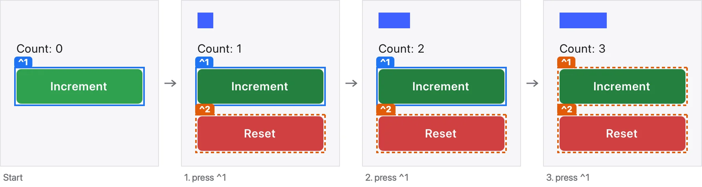
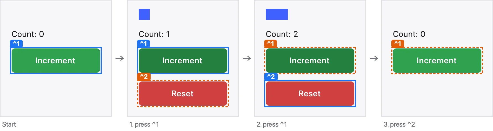

Counter map · counter-window
Counter window
The spike's window: a bar as long as the count, Increment, and Reset when there is something to reset. Generated from the claims in Examples.Counter; every status comes from evidence (see the Evidence page).
seen ✓


Press Increment three times. The count is three. — proved ✓ · conformance not run · seen ✓

Count up, then press Reset. The count is back to zero and Reset is gone. — proved ✓ · conformance not run · seen ✓
